This Week: Egyptian Hieroglyphs

Sumerian: 3300 BCE
Basically invented at the same time!
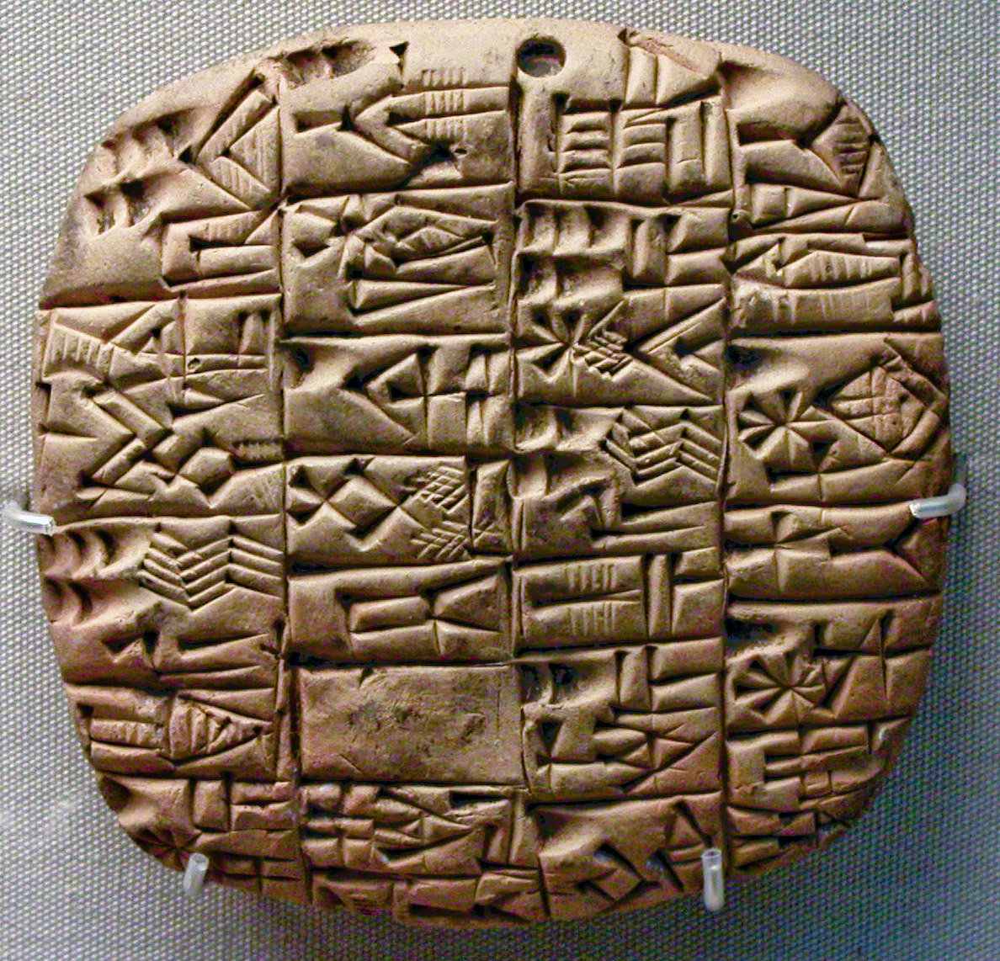
Egyptian: 3150 BCE
Basically invented at the same time!

Stimulus Diffusion or Independent Invention?
Most common view is that the hieroglyphs were invented by stimulus diffusion.
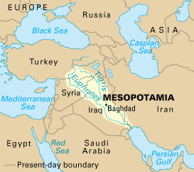
Stimulus Diffusion
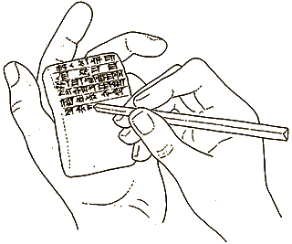
Stimulus Diffusion 
Stimulus Diffusion
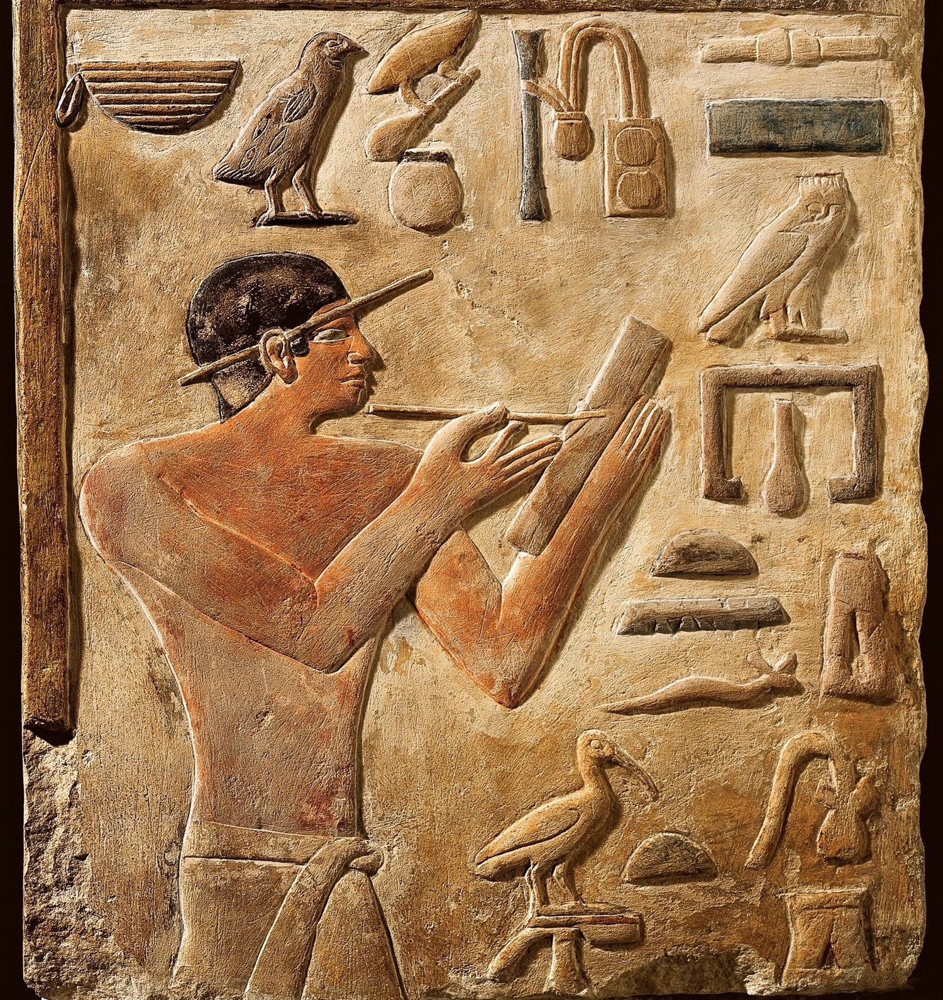
Stimulus Diffusion
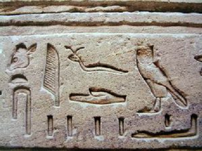
Stimulus Diffuision
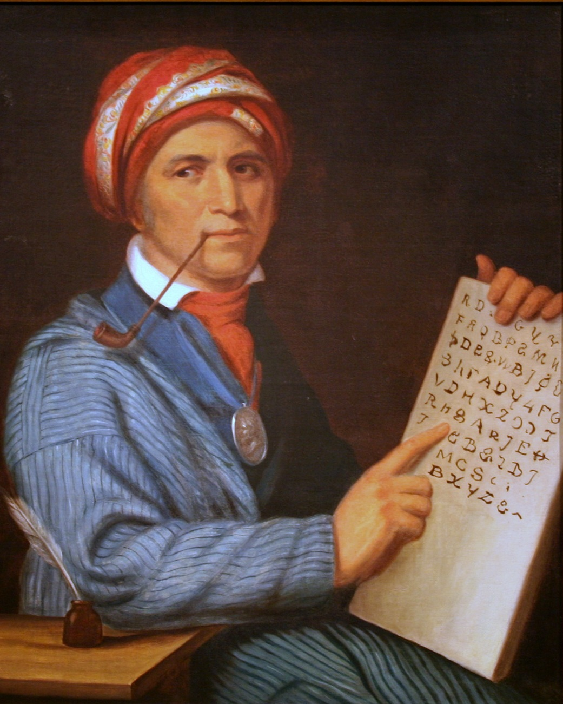
Stimulus Diffusion or Independent Invention?

- No obvious evolution of writing in Egypt
- Unlike Mesopotamia… Tokens (ca 10000 y BP)
- Writing (5000+ y BP)
Günter Dreyer

Dreyer’s Counterargument: Abydos
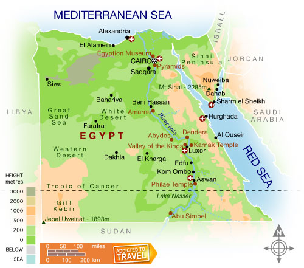
Dreyer’s Counterargument: Abydos
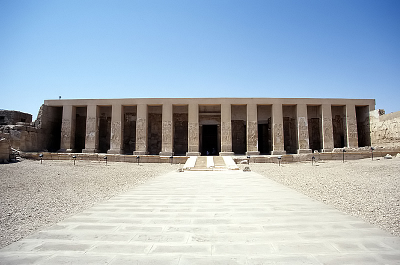
Dreyer’s Counterargument: Abydos
- German archaeologist Günter Dreyer discovered bone and ivory “tags”, pottery vessels and clay seal impressions with hieroglyphs in tombs in Abydos, Egypt (250 miles south of Cairo)
Dreyer’s Counterargument: Abydos
He claims to date at least as early as 3200, perhaps even 3400 bce and are best understood as writing (i.e., represent language)
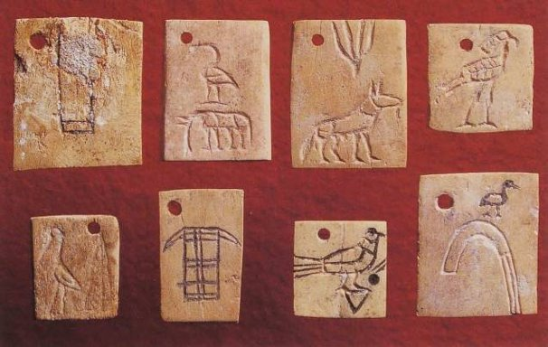
Dreyer – 3 categories for Abydos Seals
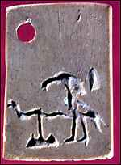
Some carried unique symbols that do not appear in later writing, and thus cannot be deciphered.
Abydos Seals

Some labels carried symbols also seen in later hieroglyphics, and could be deciphered.
Abydos Seals
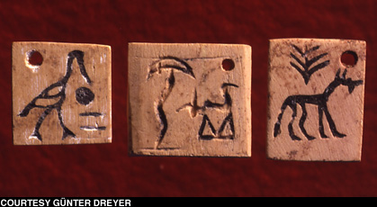
- Some labels had symbols that can be understood pictographically (cf. Native American pictographs).
- Thus the appearance of a symbol for a tree and an animal apparently meant “from the plantation [indicated by the tree] of the king whose symbol is this animal.”
Purpose of Seals
According to Dreyer, purpose of early hieroglyphs purely economic, just as we see in early cuneiform.
Purpose of Seals
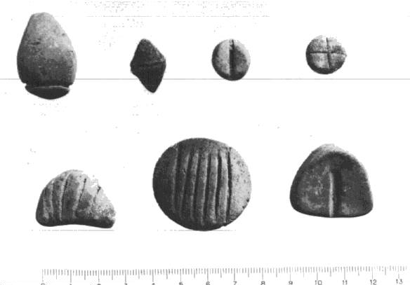
STORK + CHAIR?
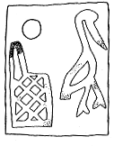
- For Dreyer, some labels require a phonographic reading < ba fet >
- = city name on the Nile Delta (based on later hieroglyphic readings)
- makes no sense as STORK + CHAIR!
- Through the rebus principle, these symbols are phonographic
Sumerians
For the Sumerians, writing in the beginning was really all about…
But in Egypt:
mdwt nṯr “word of god” = hieroglyphs
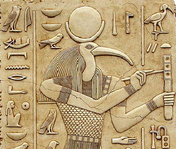
The Magic of Writing
Fairly common in the ancient world
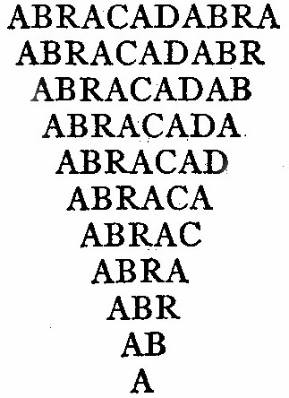
The Decipherment of Egyptian Hieroglyphs
How was Egyptian deciphered?
Pre-Modern Times
Napoleonic Conquest –> Rosetta Stone
Decipherment by Young & (especially) Champollion
Obelisk at the Vatican (originally Heliopolos)

Athanasius Kircher (1602-1680)

Athanasius Kircher (1602-1680)
Kircher was a German Jesuit scholar based mostly in Rome
- one of the great “universal geniuses” of the 17th century.
He wrote on everything: magnetism, China, volcanology, music, optics, cryptography, and Egypt.
If there was a mysterious system or exotic language, he wanted a crack at it
Athanasius Kircher (1602-1680)
In Kircher’s day, Europeans largely believed hieroglyphs were:
Symbolic, mystical emblems
Vehicles of hidden philosophical or theological truths
A kind of sacred wisdom language, not ordinary writing
Athanasius Kircher (1602-1680)
Most of Kircher’s interpretations of hieroglyphs are wrong, but he did have one major insight
Coptic – the language of the Egyptian church – is an evolved form of Ancient Egyptian
Abbé Jean-Jacques Barthélemy (1716-1795)

Barthélemy: Cartouches

Barthélemy: Cartouches

Georg Zoëga (1755-1809)

Georg Zoëga (1755-1809)
Danish scholar working in Rome
Close to papal collections of Egyptian materials
Treated hieroglyphs as a historical writing system, not as mystical symbolism
Georg Zoëga (1755-1809)
By the late 18th century, Kircher’s (incorrect work) was still influential.
Zoëga rejected that approach and instead emphasized:
Napoleonic Conquest

Napolean
After the French Revolution, France was at war with Britain. By 1797–98:
France controlled much of continental Europe.
Britain remained the main enemy.
A direct invasion of Britain was unrealistic — the Royal Navy dominated the sea.
So the French Directory government looked for another way to weaken Britain.
Why Egypt?
Egypt was technically part of the Ottoman Empire, but loosely controlled.
Strategically, Egypt mattered because:
It sat on the route to India.
India was Britain’s economic jewel.
Controlling Egypt could threaten British trade and imperial access.
Invading Egypt
But Napoleon didn’t just bring soldiers. He brought:
150+ scholars, engineers, linguists, artists.
The Commission des Sciences et des Arts.
- documented monuments, inscriptions, flora, fauna, architecture.
Invading Egypt: The Battle of the Pyramids

Domenique Vivant Denon

Domenique Vivant Denon

Ramifications

Ramifications

Ramifications

The Rosetta Stone
In 1799, French soldiers discovered the Rosetta Stone
- Found in a wall in Rashid, close to the sea
- Immediately moved to Cairo, copies made
- Eventually captured by the British, who brought it to London.
The Rosetta Stone
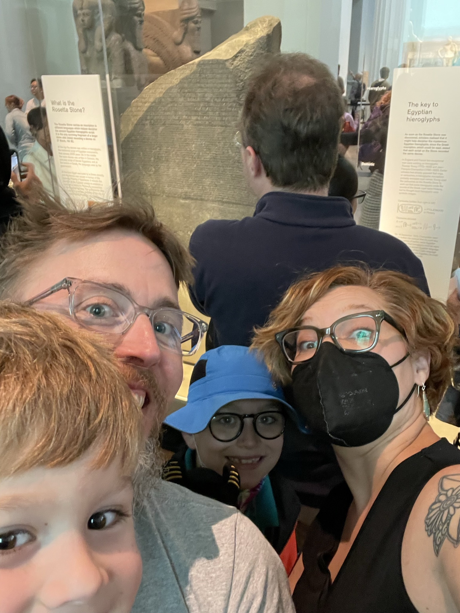
The Rosetta Stone

The Rosetta Stone: Hieroglyphs

The Rosetta Stone: Demotic

The Rosetta Stone: Greek

Remember These?

Thomas Young

Young: Ptolemy & Cleopatra

Young: Ptolemy & Cleopatra

Activity: Ptolmes & Cleopatra
Follow-Up:
Now try to identify the name of this famous leader:

Jean-François Champollion (1790-1832)
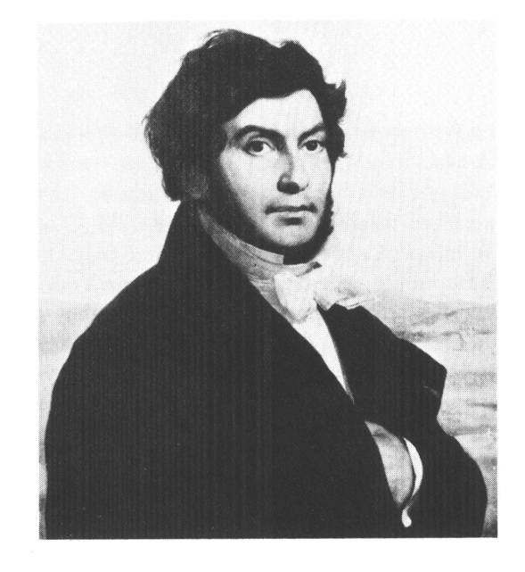
Champollion
- Champollion took Young’s work and ran with it
- Applied phonetic principles to other Egyptian names (e.g., Ramesses, Thutmose).
- Used Coptic to recognize Egyptian lexical roots.
Champollion
- He argued hieroglyphs were a mixed system:
- Phonetic signs
- Determinatives
- Logograms
Hieratic Script
- Pretty much from the beginning:
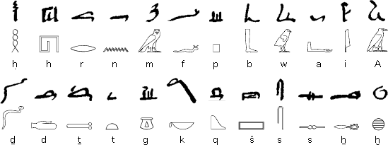
From 1st dynasty: 2925+ BCE
Restricted to “priestly” texts (hence hieratic)
Simplified & cursive, but structurally identical
Another script: Demotic
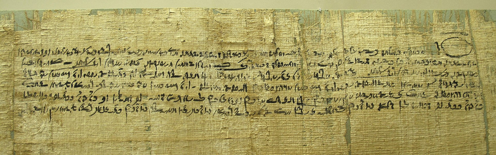
Hieratic & Demotic
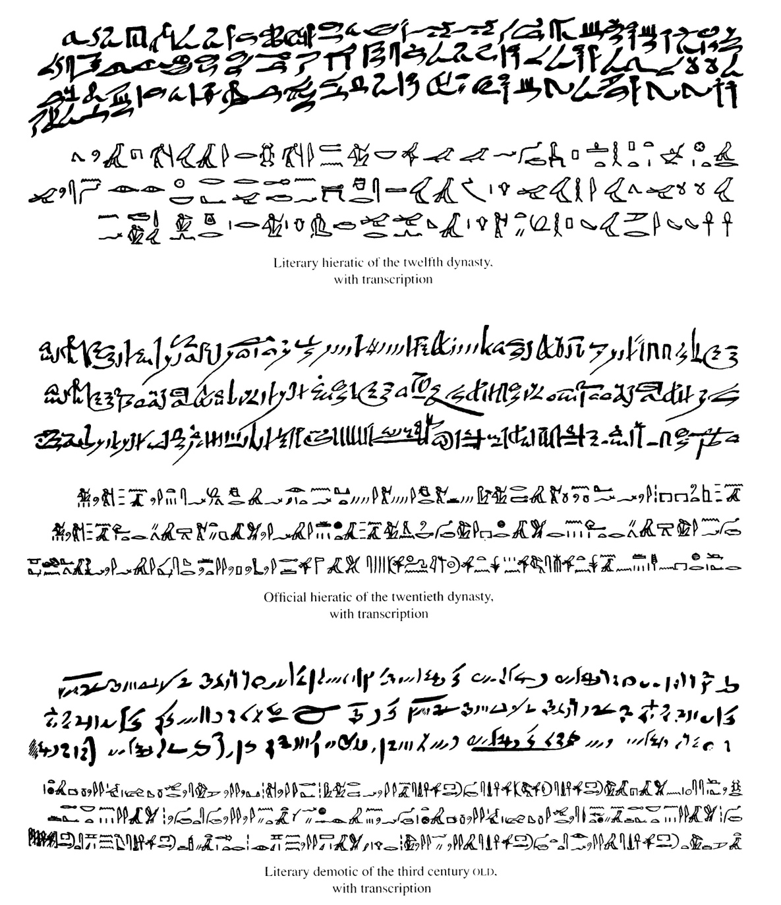
Handwriting Variants
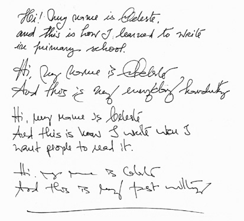
Demise of Hieroglyphs

The last dated hieroglyphic text is inscribed on a wall of the temple of Philae, in south Egypt – 394 ce
Soon followed by the last known demotic text, 452 ce
Activity